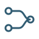

검색전체 검색
인재 채용
지원 안내
자주 묻는 질문
채용 과정에서
자주 묻는 질문을 안내합니다.
접수 전 공고별 자격과 담당 업무를 살펴본 뒤 가장 잘 맞는 분야 하나를 골라 주세요. 진행 중인 접수는 한 분야씩 검토합니다.
직무별 실무 학습과 공통 역량 과정, 외국어 학습 등을 운영합니다. 업무에 필요한 주제를 중심으로 참여할 수 있습니다.
첫 대화에서는 업무 경험과 기술 과제를 중심으로 이야기를 나눕니다. 다음 단계에서는 협업 방식과 역할 적합도를 함께 확인합니다.
지원 직무와 연결되는 프로젝트나 활동이 있다면 맡은 역할과 결과를 구체적으로 적어 주세요. 경험의 맥락을 이해하는 데 도움이 됩니다.
관심 분야와 지원 역할의 관련성, 경험에서 얻은 배움을 중심으로 확인합니다.
인턴은 정해진 기간 동안 실제 업무를 경험합니다. 종료 시점에는 과제 진행 과정과 협업 경험을 함께 돌아봅니다.
새 공고에 지원할 때는 해당 공고의 안내와 자격을 기준으로 다시 검토합니다. 지원 전 최신 모집 내용을 확인해 주세요.
단계별 결과는 지원서에 남긴 연락처로 전달됩니다. 다음 일정이 정해지면 준비에 필요한 내용을 함께 안내합니다.
지원 분야에 맞는 사례나 실무 과제를 통해 문제를 파악하고 해결한 과정을 살펴봅니다. 자세한 방식은 공고에 안내합니다.
연령보다 직무에 필요한 경험과 역량을 중심으로 검토합니다. 특정 역할의 조건은 해당 모집 공고에서 확인해 주세요.
새 채용이 열리면 홈페이지의 공고 목록에 지원 기간과 역할을 게시합니다. 일정과 선발 규모는 공고별로 확인해 주세요.
학력이나 경력만으로 판단하지 않고, 직무와 관련된 관심과 역량을 함께 살펴봅니다. 우대 조건은 각 공고에 안내합니다.
채용 문의
채용 절차와 직무에 대해
채용 절차를 확인하세요
세영오토텍 채용에 관한 질문은
채용 문의는 아래 연락처로 보내 주세요.
문의 내용 확인 후 이메일로 답변합니다.
문의 이메일
이메일 주소를 복사해
문의 내용을 보내 주세요.
세영오토텍은 모집 공고를 통해
모집 공고를 확인해 주세요.
문의 답변은
단계 01
문의 접수
단계 02
지원서 검토
단계 03

답변 안내
* 문의 내용은 확인 후 안내합니다.
이메일 주소를 복사했습니다.
이메일 수집 거부
웹사이트 이메일 주소는
자동 수집을 허용하지 않습니다.
관련 법령을 따릅니다.